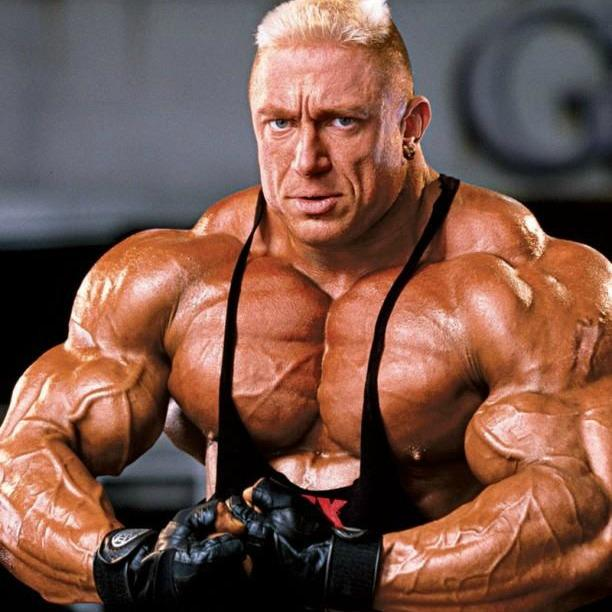
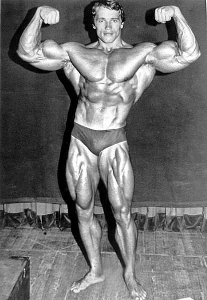
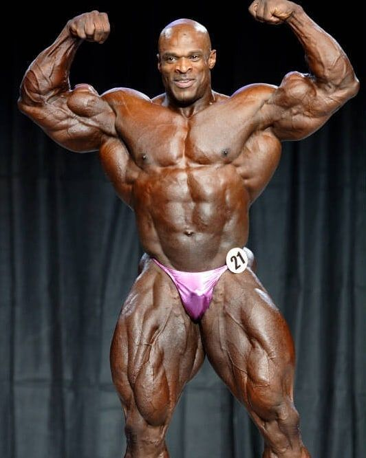
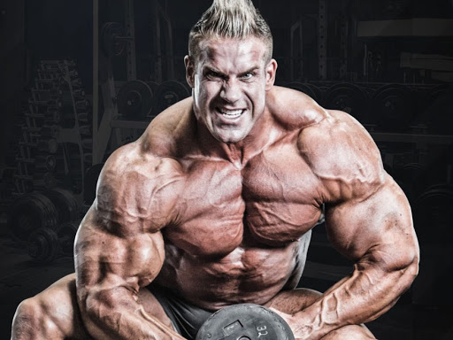

Rühl, der mit um die 130 kg Wettkampfgewicht als einer der schwersten und größten Athleten galt

Mit insgesamt sieben Mr.-Olympia-Titeln und fünf Mr.-Universum-Titeln war Arnold Schwarzenegger der erfolgreichste Bodybuilder seiner Zeit und wird bis heute als prägende Persönlichkeit des Bodybuildings angesehen. 1999 wurde Schwarzenegger in die Hall of Fame der IFBB aufgenommen. Schwarzenegger erhielt für sein karitatives Engagement im Jahr 2003 den Laureus World Sports Award

Nachdem Coleman diesen beim Mr. O. insgesamt viermal auf den zweiten Platz verweisen konnte (2001, 2003–2005), musste er sich letztendlich im Jahre 2006 seinem neun Jahre jüngeren Kontrahenten beugen.
Er ist 3-facher Arnold Classic und 4-facher Mr.Olympia Sieger.